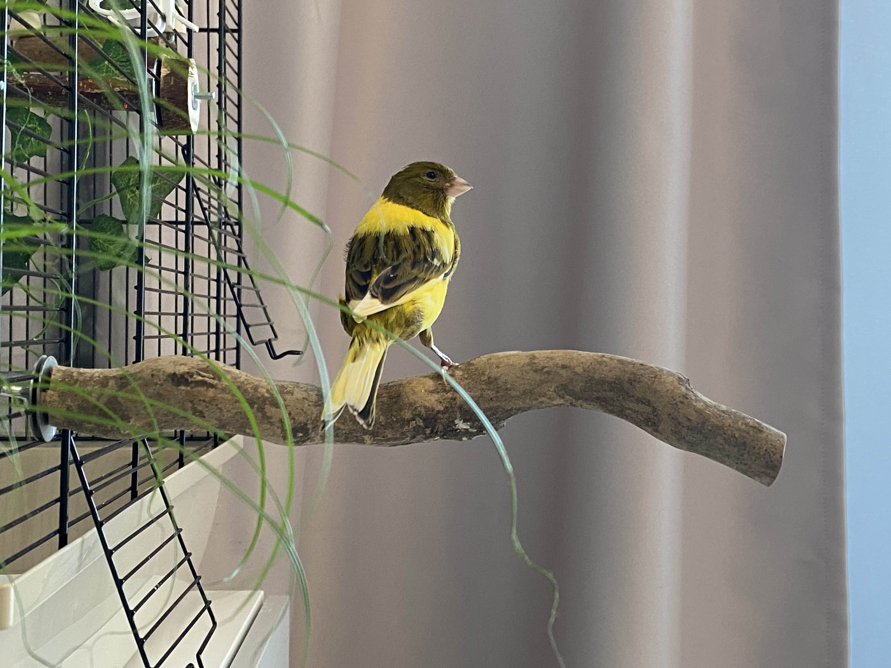
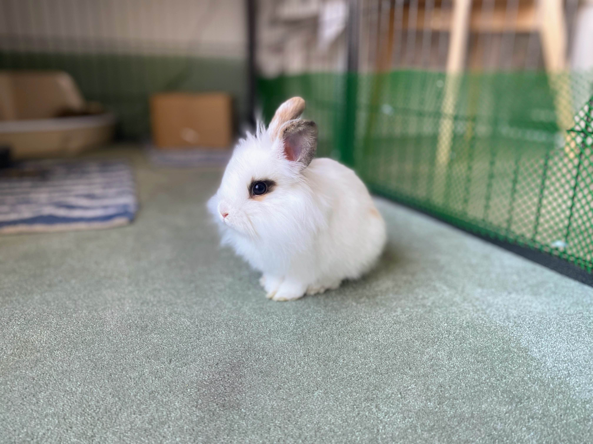

I'm an engineering tech and aviculturist with a passion for elevators and ornithology. This website serves as a little creative outlet for my writings & drawings about life, the universe, and everything - but mostly birds.
Meet Hazel, a Harz Roller canary hatched in June 2024. Known for her vegetable thievery, she is brave and companionable and will chatter away on my desk all day, pausing to jump away and look out the window at passing traffic. Her favorite food is bell peppers but she will happily demolish anything green (including houseplants.)
Next is Juniper, a Lionhead rabbit born in October 2024. She is quite shy, but warms up quickly to cuddles and snacks. She likes to race around on rugs but refuses to step on hard floors. Though endlessly spoiled, she is sweet and extremely soft, too. Her favorite food is red cabbage.
